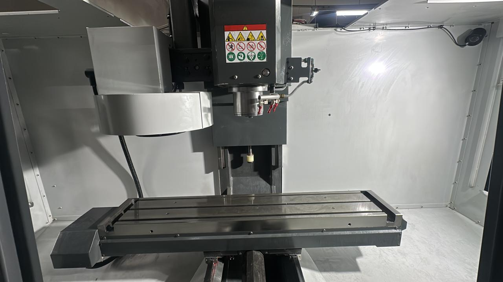
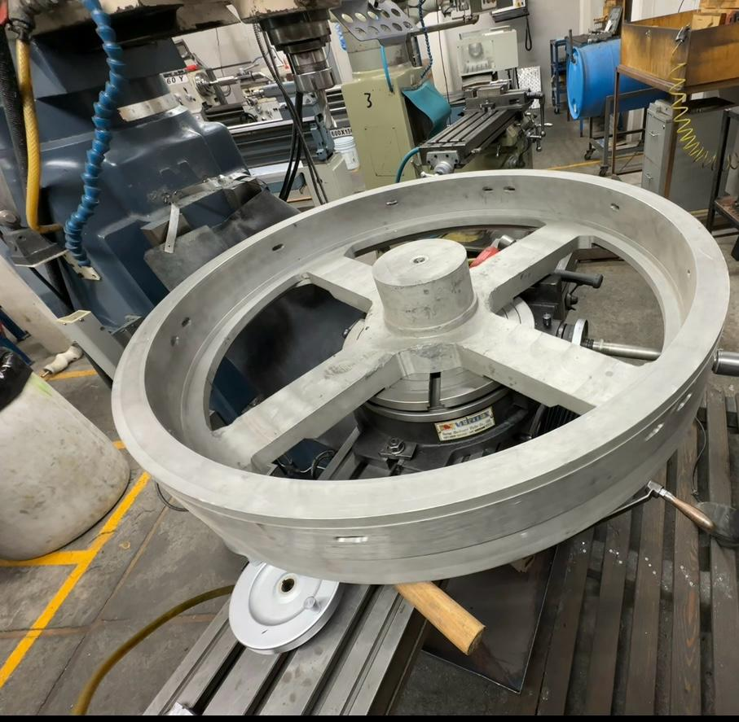

Fabricación y maquinado
Fabricación de piezas, refacciones especiales y componentes de precisión.
- Maquinado CNC
- Torno y fresadora convencional
- Ingeniería inversa
Desarrollamos soluciones integrales de ingeniería, manufactura y automatización industrial. Ofrecemos servicios de diagnóstico, mantenimiento y modificación de equipos de etiquetado industrial, atendiendo sistemas mecánicos, eléctricos y de control. Desde el diseño y fabricación de componentes hasta la modernización de maquinaria, identificamos y resolvemos necesidades operativas para optimizar el funcionamiento de los equipos, mejorar su desempeño y contribuir a una mayor confiabilidad, eficiencia y continuidad en los procesos de producción.
Nuestra prioridad es encontrar la solución técnicamente adecuada para cada desafío industrial.
Fabricación de piezas, refacciones especiales y componentes de precisión.
Integración y actualización de sistemas de control para maquinaria.
Diagnóstico, mantenimiento y modificaciones mecánicas y eléctricas.
Desarrollo de soluciones a la medida desde el concepto hasta la fabricación.
Fabricacion y maquinado
Desarrollamos y fabricamos piezas, componentes y refacciones especiales mediante procesos de maquinado CNC y convencional.
Combinamos experiencia técnica, conocimiento de manufactura y tecnología para producir soluciones que responden a las exigencias de la industria.

CNCContamos con maquinaria CNC de última generación para garantizar precisión y calidad en cada pieza.
Utilizamos técnicas de maquinado convencional para garantizar la calidad y precisión en nuestros productos.

Desarrollamos y fabricamos refacciones especiales para satisfacer las necesidades específicas de nuestros clientes.
En C Labeling Solutions contamos con capacidades de manufactura para desarrollar y fabricar componentes mecánicos de precisión, refacciones especiales y soluciones a la medida de las necesidades industriales. Integramos procesos de maquinado CNC y convencional, utilizando torno y fresadora para fabricar, modificar y recuperar piezas, desde componentes individuales hasta elementos mecánicos especializados. Nuestra experiencia nos permite trabajar a partir de planos, muestras físicas o requerimientos específicos, realizando ingeniería inversa, adaptación y rediseño de componentes cuando las condiciones del equipo lo requieren.
Nuestras capacidades incluyen: